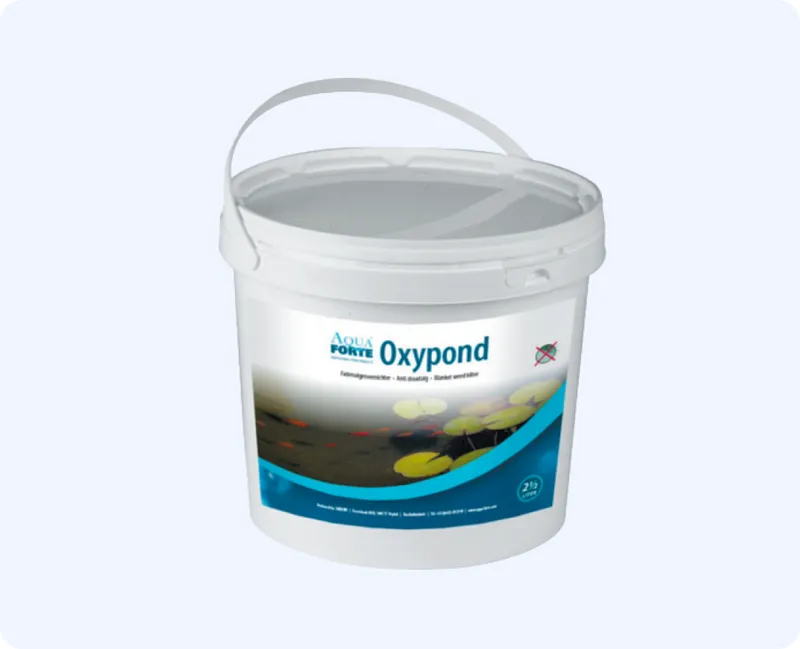

Биопрепараты
Против нитевидных водорослей OXYPOND, 5кг, для пруда до 150000л
Цена и наличие
- 1 шт.489,73 BYN / шт.В наличии
Данные на 23.11.2026.
Характеристики
- Размер емкости
- 5 кг
- Для прудов макс. объемом воды
- до 150000 л
- Назначение
- Против нитевидных водорослей, насыщение воды кислородом
- Производитель
- Aqua Forte
- Страна
- Голландия
Описание
Oxypond - это препарат на основе активного кислорода, который напрямую влияет на клеточную структуру водорослей, разрушая их.
Средство против нитевидных водорослей в пруду и насыщения воды кислородом OxyPond 5,0 кг , для пруда 150м3 Oxypond – это препарат на основе активного кислорода, который напрямую влияет на клеточную структуру водорослей, разрушая их. Средство действует против нитевидных водорослей. Oxypond содержит особые бактерии, расщепляющие остатки водорослей, является профилактикой против паразитов и некроза жабр, не содержит тяжелых металлов или органических биоцидов. При использовании Oxypond качество прудовой воды заметно улучшается. Она становится более прозрачной и чистой. Добавьте Oxypond прямо в воду, а лучше непосредственно на нитевидные водоросли. Перед применением необходимо проконсультироваться со специалистом.
Применение и дозировка
Применение и дозировка: 1,0 кг Oxypond достаточно для обработки примерно 20-50 м³ воды в пруду. Небольшая дозировка – 10 г/м³ (100 м³ водоема при расфасовке 1,0 кг) подходит для повышения уровня кислорода в водоеме. Средняя дозировка – 30 г/м³ (33 м³ водоема при расфасовке 1,0 кг) применяется при контролируемом количестве нитевидных водорослей. Максимальная дозировка – 50 г/м³ (20 м³ водоема при расфасовке 1,0 кг) при взрывном росте водорослей в пруду. После использования отмершие водоросли поднимаются на поверхность, их требуется немедленно удалить из воды. Внимание: Не используйте препарат, если значение рН превышает 8,6